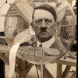

68 · 14 · 5 시간 전 · 원문
그는 결국 자살로 위장되어 생을 마감하였다고 한다
수집 당시 댓글 14개
회차인생 · 11 시간 전
아돌프씨
옥탑방개드립 · 11 시간 전
독일의 독재자 히틀러를 쏜 오스트리아 화가지망생 아돌프씨 ㅠㅠ
↳ 답글 · gamesir · 5 시간 전
뭔가 히틀러하면 개나쁜새기같은데 아돌프씨 이러면 옆집 외국인 아저씨같음
환경파괴범캐리어 · 9 시간 전
아다만타이트 · 5 시간 전
라스카리스 · 5 시간 전
눈물을 마시는 새...
렙은과학 · 5 시간 전
버디언 · 5 시간 전
깁기 · 5 시간 전
빅라이터 · 5 시간 전

바나나그래버 · 5 시간 전
히틀러가 손수 찾아가 권총으로 쟤랑 쟤 애인 같이 쏴죽였다는 말도 있더라 ㄷㄷ
콩냉이순장고 · 5 시간 전
사이쿄다 · 4 시간 전
야율아보기 · 4 시간 전
히틀러가 쏜 흉탄에 생을 마감


아돌프씨